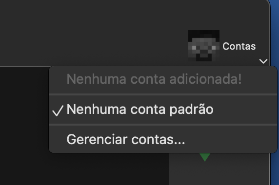
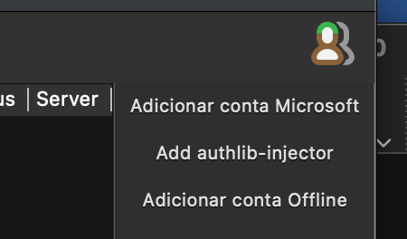

Vish Minecraft
Instalação
Java
Baixe e instale o Java 17:
Launcher
Baixe e instale o Fjord Launcher Unlocked:
Configurar conta
Para contas originais, adicione uma conta da Microsoft normalmente na instalação do Launcher, seguindo o passo a passo.
Para contas Ely.by, faça a instalação do launcher sem adicionar uma conta da Microsoft, clique no seletor de contas e em seguida em Gerenciar contas...
No canto superior direito, clique em Add authlib-injector:
Adicione seu usuário e senha, e no campo Url copie e cole: https://account.ely.by/api/authlib-injector.
Modpack
Baixe o modpack, depois arraste o arquivo para a janela do launcher: